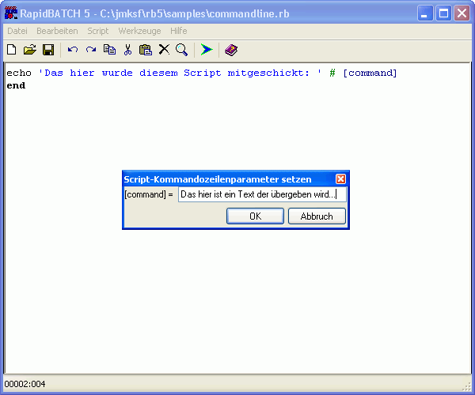
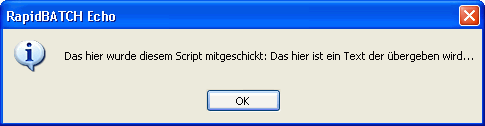

Systemspezifische, vordeklarierte Variablen
Es mag vielleicht sein, dass der Abschnitt "Systemoperationen" nicht ganz passend ist, um alle vordeklarierten Variablen, die RapidBATCH bietet, zu behandeln, aber es haben auch sehr viele der vordeklarierten Variablen ihre Bestimmung bei der Programmierung von Scripts, die system-basierende Operationen ver- und bearbeiten. Bis jetzt haben Sie bereits viele der so genannten "vordeklarierten Variablen" kennen gelernt. Vordeklarierte Variablen werden vor der Ausführung eines jeden Scripts automatisch vom Interpreter deklariert. Bei einigen vordeklarierten Variablen ist der darin enthaltene Wert änderbar, bei anderen wird er bei jedem Aufruf der Variable direkt neu ermittelt.
Ich werde in diesem Kapitel zwar nicht alle vordeklarierten Variablen behandeln, aber die wichtigsten, besonders solche, die für Systemoperationen von Bedeutung und Nutzen sind.
Oftmals ist es von groflem Nutzen, ein Programm bzw. Optionen und Informationen an ein Programm über die Kommandozeile zu übergeben. Dies darf natürlich auch bei RapidBATCH nicht fehlen! Die Variable [command] enthält alle Kommandozeilenparameter, die hinter dem Dateinamen des Script-Files (wenn das Script mit dem Interpreter ausgeführt wird) bzw. bei compilierten Scripts alle an die EXE-Datei übergebenen Kommandozeilenparameter, übergeben wurden.
Bestes Beispiel stellt folgendes Script dar. Es gibt einfach den Inhalt der Variablen [command] in einem Meldungsfenster aus. Im RapidBATCH Builder können Sie zum direkten Testen Ihrer Scripts die Funktion "Setze [command]..." im Menü "Script" benutzen.
echo 'Das hier wurde diesem Script mitgeschickt: ' # [command]
end

Die Funktion "Setze [command]...", ideal zum Testen von Kommandozeilen-Parametern...

...mit Erfolg!
Sie möchten einen beliebigen Wert für jedes andere Windows-Programm zugänglich machen? Mit RapidBATCH ist auch dies kein Problem. Durch Zuweisung eines beliebigen Wertes an die Variable [clipboard] wird dieser sofort in die Windows-Zwischenablage kopiert. Ein Auslesen von [clipboard] ermöglicht das sofortige Auslesen des Zwischenablagen-Inhaltes.
Ein einfaches Beispiel, welches sogar den Inhalt der Zwischenablage in einem anderen Programm einfügt:
rem Zeige mir den Inhalt der Zwischenablage!
echo 'Aktueller Inhalt der Zwischenablage: ' # [clipboard]
rem So und jetzt schreiben wir mal ein "Hello World" rein!
[clipboard] = 'Hello World by RapidBATCH'
echo 'Neuer Inhalt der Zwischenablage: ' # [clipboard]
rem Und jetzt via Fernsteuerung den Text mal im Notepad "einfügen"
shell [windir] # '\notepad.exe', 'show'
wait '500'
sendkeys [active_window]: 'Und das ist der Inhalt Ihrer Zwischenablage in einem anderem Programm: #271v#017'
end
Und da findet man auch direkt schon die nächste, vordeklarierte Variable: [active_window]! [active_window] enthält den Titel des aktuellen Vordergrundfensters und kann idealerweise von SENDKEYS exzellent genutzt werden, wenn man den genauen Titel eines Fensters nicht kennt oder dieser variabel ist, wie es z.B. bei Word - oder anderen Office-Programmen - der Fall ist, wenn man ein Dokument geladen hat.
Auch die bereits kennen gelernte Variable [windir] wird im obigen Script benutzt; Sie enthält den absoluten Pfad des Windows-Systemverzeichnisses.
Auch das Auslesen von Systemdatum und Systemzeit ist in RapidBATCH kein Problem. Folgendes Script zeigt für 10 Sekunden die aktuelle Uhrzeit und das aktuelle Datum in einer INFOBOX sekundengenau an.
[i] = '0'
repeat
[i] + '1'
infobox 'Es ist ' # [time] # ' am ' # [day] # '.' # [month] # '.' # [year], 'show'
wait '1000'
until [i] = '10'
end
Die Variable [time] enthält die Uhrzeit, wird also bei jedem Auslesen aktuell und neu gefüllt. Das Format der [time]-Variablen ist HH:MM:SS, also Stunden, Minuten und Sekunden. Anders ist es bei dem Datum. Da RapidBATCH ein international eingesetztes Softwareprodukt ist, wurde hier Wert auf einfache Datumsformatierung gelegt, und die drei Informationen "Tag", "Monat" und "Jahr" in drei Variablen, [day], [month] und [year] aufgeteilt. Man kann also durch einfaches "Zusammenbauen" des Datums mit dem Join-Operator (#) das Format völlig frei bestimmen.
Ausgabe der aktuellen Zeit und des aktuellen Tagesdatums im INFOBOX-Dialog.
Oftmals ist es auch nötig, ob nun bei der Ausgabe von Informationen oder direkt beim Schreiben von Dateien, beispielsweise Tabulatoren oder Zeilenumbrüche einzufügen. Da ein Tabulator oder Zeilenumbruch intern nichts anderes als ein weiteres ASCII-Zeichen ist, könnte man sich dieses auch mit der Funktion GETCHR holen, aber RapidBATCH hat auch bereits vordeklarierte Variablen, welche einem an dieser Stelle die Arbeit abnehmen: [new_line], [tab], [crlf], [pipe] und [quot]. [new_line] und [crlf] stellen jeweils Zeilenumbrüche dar, allerdings mit einem wichtigem Unterschied. Unter Windows-Systemen ist es besonders bei Texten üblich, Zeilenumbrüche mit zwei anstatt mit einem Zeichen einzuleiten. Diese heissen "carriage return" und "line feed" (ASCII-Zeichencodes 13 und 10, daher auch [crlf], Carriage Return + Line Feed). Diese beiden Begriffe kommen noch aus der Urzeit der Computer, wo die Ausgabe aller Programme noch vornehmlich auf Nadeldruckern erfolgte, daher "carriage return", was übersetzt soviel heisst wie "Schreibkopfrücklauf" und "line feed", was nicht mehr als "Zeilenvorschub" heisst. I.d.R. reicht meist aber ein einfaches [new_line], welches nur ein "line feed" bewirkt, um einen Zeilenumbruch darzustellen. [tab] enthält ein Tabulatorzeichen, [pipe] das Zeichen "|", welches auch als RapidBATCH Standard Separator bei Listen verwendet wird. Die Variable [quot] enthält ein einfaches Anführungszeichen, welches in RapidBATCH selber zur Ein- und Ausleitung von Strings im Script-Code verwendet wird, und daher nicht direkt ausgegeben werden kann. Um dieses Zeichen selber in einem String zu verketten, verwenden Sie [quot], welche dieses Zeichen (') enthält.
rem Zeilenumbrüche
echo 'Dies ist' # [new_line] # 'ein Zeilenumbruch in ' # [crlf] # 'zwei Versionen'
rem Tabulatoren
echo 'Ein' # [tab] # 'Tabulator!'
rem Pipe-Zeichen
echo 'Das als ' # [std_sep] # ' definierte Zeichen ist Standardmäflig ein ' # [pipe] # ' ;)'
rem Einfaches Anführungszeichen
echo 'echo ' # [quot] # 'Dies ist der Code für eine einfache Ausgabe' # [quot] # [crlf] # 'end'
Bereits in vorherigen Abschnitten haben Sie die Variable [errorcode] kennen gelernt. Diese werden Sie auch am häufigsten zur Abfrage von Fehlern verwenden. [errorcode] gibt in fast allen Fällen (bis auf Ausnahmen bei SHELL und CALL) die Werte '0' für "kein Fehler" bzw. "wahr" und '-1' für "Fehler" bzw. "falsch" zurück. Um eine IF- oder UNTIL-Bedinung etwas professioneller zu realisieren, wurden während der Entwicklung von RapidBATCH 5 noch die Variablen [true] und [false] hinzugenommen. [true] enthält standardmäflig den Wert '0', [false] standardmäflig den Wert '-1'. Eine IF-Abgrage kann also zum besseren Verständnis sowie zur erhöhten Dynamik so programmiert werden:
chdir 'C:\test'
if [errorcode] = [false]
echo 'Fehler, das Verzeichnis wurde nicht gefunden!'
else
echo 'Das Verzeichnis wurde erolgreich gewechselt.'
endif
Zu guter Letzt noch eine Variable, die im wahrsten Sinne des Wortes gar nichts tut: [null]!
Diese Variable hat u.a. den Zweck, Funktions-Rückgabewerte abzufangen, die nicht benötigt werden, denn nicht immer wird der Rückgabewert einer Funktion wirklich gebraucht. Bei Zuweisung an die Variable [null] wird der Wert im Speicher direkt verworfen, muss also nicht erst in eine Pseudo-Returnvariable kopiert werden, was wiederum unnützen Speicherverbrauch zur Folge hat. Des weiteren kann [null] auch als Parameter bei Anweisungen oder Funktionen übergeben werden, wenn man einen Leerstring übergeben will. [null] ist also die aussagekräftigere Alternative zur Angabe eines Leerstrings.
Copyright © 2000-2006 by J.M.K S.F. Software Technologies, Jan Max Meyer
All rights reserved.